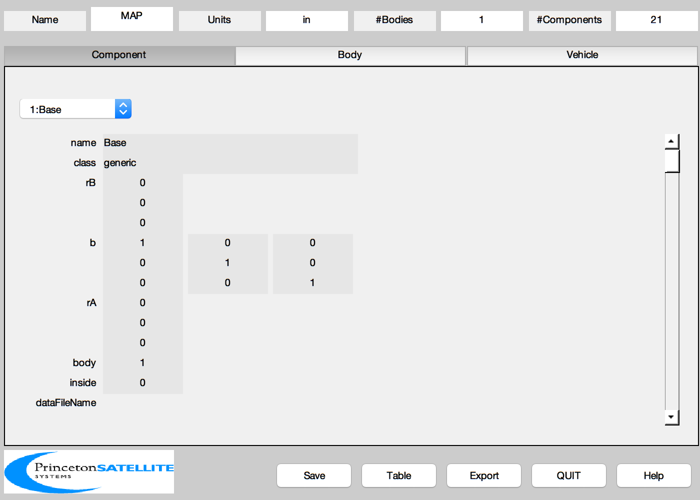
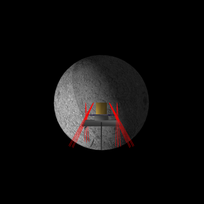
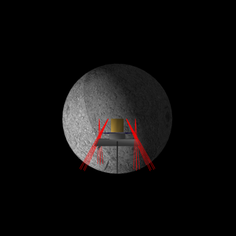

Build a model of the Microwave Anisotropy Probe.
The data is taken from web pictures so colors and dimensions are limited in accuracy. The position of the spacecraft relative to the moon and earth is fictional. This script makes use of the many CAD objects that BuildCADModel can use, including the reaction wheel object.
The thruster locations are based on our own design and are not the same ones that MAP actually uses. We used our optimal thruster distribution law to pick a minimal set of thrusters.
After the model is finished, it is displayed with DrawSCPlugIn. We show how to display the plumes individually and then together using the displayPlume field of the thruster deviceInfo.
------------------------------------------------------------------------ See also BuildCADModel, CreateComponent, DrawSC, Date2JD, MoonV1, SunV1 ------------------------------------------------------------------------
Contents
%------------------------------------------------------------------------------- % Copyright (c) 1998-2003 Princeton Satellite Systems, Inc. % All rights reserved. % Since version 2. %-------------------------------------------------------------------------------
Create the CAD model
Initialize
%------------- BuildCADModel( 'initialize' ); BuildCADModel( 'set name' , 'MAP' ); BuildCADModel( 'set units', 'in' );
Core body
%------------ m = CreateBody('make','name','Core'); BuildCADModel('add body', m ); BuildCADModel('compute paths');
Components
%------------- % The Base %--------- theta = (0:1:5)*pi/3; s = sin(theta)'; c = cos(theta)'; mHex = [s c zeros(6,1)]; m.v = 97.96*mHex; m.f = [1:6;6:-1:1]; m = CreateComponent( 'make', 'generic','inside',0,... 'vertex', m.v, 'face', m.f, 'name', 'Base', ... 'body', 1, 'faceColor', 'solar cell'); BuildCADModel( 'add component', m ); % The base plate %--------------- m.v = 40.815*mHex; m.f = [1:6;6:-1:1]; m = CreateComponent( 'make', 'generic','inside',0,... 'vertex', m.v, 'face', m.f,... 'rA', [0 0 -32.37]', 'name', 'Base plate', ... 'body', 1, 'faceColor', 'solar cell'); BuildCADModel( 'add component', m ); % The reaction wheels %-------------------- rwaA = [0 2*pi/3 4*pi/3]; sR = sin([0 2*pi/3 4*pi/3]); for k = 1:3 rA = [36*[sin(rwaA(k)); cos(rwaA(k))]; -8]; u = [sin(rwaA(k))*cos(pi/4); cos(rwaA(k))*cos(pi/4); sin(pi/4)]; m = CreateComponent( 'make', 'reaction wheel', 'model', 'hr60', 'unitVector', u,... 'rA', rA, 'mass', 1.5, 'name', sprintf('RWA %i',k),... 'body', 1, 'inside', 1, 'faceColor', 'steel' ); BuildCADModel( 'add component', m ); end % The truss %---------- r = [40.815*[s c] zeros(6,1);40.815*[s c] -32.37*ones(6,1); 16.32*[s c] zeros(6,1)]; theta = [-14 14 46 74 106 134 166 194 226 254 286 314]'*pi/180; r = [r; 36.88*[sin(theta) cos(theta) zeros(12,1)]]; c = [1 7;2 8;3 9;4 10;5 11;6 12;7 13;8 14;9 15;10 16;11 17;12 18;... 7 19;7 20; 8 21; 8 22;9 23;9 24;10 25; 10 26;11 27; 11 28; 12 29; 12 30]; m = CreateComponent( 'make', 'generic', 'vertex', r, 'face', c,... 'inside',0,'name', 'truss', ... 'body', 1, 'faceColor', 'aluminum truss'); BuildCADModel( 'add component', m ); % The box %-------- m = CreateComponent( 'make', 'cylinder','inside',0,... 'rUpper', 16.32, 'rLower', 16.32, 'h', 30.14, 'n', 6, ... 'rA', [0 0 -30.14]', 'name', 'Box', 'body', 1, 'faceColor', 'gold foil'); BuildCADModel( 'add component', m ); % The payload cylinder %-------------------- m = CreateComponent( 'make', 'cylinder','inside',0,... 'rUpper', 18.21, 'rLower', 18.21, 'h', 13.25, 'n', 24, ... 'rA', [0 0 -45.72]', 'name', 'Payload',... 'body', 1, 'faceColor', 'aluminum'); BuildCADModel( 'add component', m ); % The antenna support structure %------------------------------ cF = 89.17/71; v = [12 -41 -12;12 41 -12;12 -35 0;12 35 0;-12 -41 -12;-12 41 -12;-12 -35 0;-12 35 0; 12 39 -8;-12 39 -8;12 -39 -8;-12 -39 -8]*cF; v(:,3) = v(:,3) - 45.72; f = [1 2 4 3;5 6 8 7;4 9 10 8;3 7 12 11;3 4 8 7; 3 4 2 1; 7 8 6 5; 8 10 9 4; 11 12 7 3; 7 8 4 3]; m = CreateComponent( 'make', 'generic','inside',0,... 'vertex', v, 'face', f, 'name', 'antenna support', ... 'body', 1, 'faceColor', 'aluminum'); BuildCADModel( 'add component', m ); % The radiators %-------------- cF = 13.25/10; x = [0 19 19 25 25 19 0]'; z = -[0 0 6 6 28 52 52]'; v = [x ones(7,1) z;x -ones(7,1) z]*cF; f = [1 2 6 7;3 4 5 6;8 9 13 14;10 11 12 13;1 2 9 8;2 3 10 9;3 4 11 10;4 5 12 11;5 6 13 12; 6 7 14 13]; rA = -[-7*cF 0 40*89.17/71]'; m = CreateComponent( 'make', 'generic','inside',0,... 'vertex', v, 'face', f, 'rA', rA, 'name', 'radiator 1', ... 'body', 1, 'faceColor', 'radiator'); BuildCADModel( 'add component', m ); v(:,1) = -v(:,1); rA(1) = -rA(1); m = CreateComponent( 'make', 'generic','inside',0,... 'vertex', m.v, 'face', m.f, 'rA', rA, 'name', 'radiator 2', ... 'body', 1, 'faceColor', 'radiator'); BuildCADModel( 'add component', m ); % The antennas %------------- cF = 89.17/71; m = CreateComponent( 'make', 'antenna', 'x', 30, 'y', 30, 'd', 3, 'theta', pi/6, ... 'boresight', [0;cos(pi/8);sin(pi/8)], 'xUnitVector', [1;0;0], 'nFacets', 20, ... 'rA',[0;17;-84]*cF, 'name', 'Dual Gregorian Reflector Big', ... 'inside',0,... 'body', 1, 'faceColor', 'aluminum'); BuildCADModel( 'add component', m ); m = CreateComponent( 'make', 'antenna', 'x', 30, 'y', 30, 'd', 3, 'theta', pi/6,... 'boresight', [0;-cos(pi/8);sin(pi/8)], 'xUnitVector', [1;0;0], 'nFacets', 20, ... 'rA',[0;-17;-84]*cF, 'name', 'Secondary Reflector Big', ... 'inside',0,... 'body', 1, 'faceColor', 'aluminum'); BuildCADModel( 'add component', m ); m = CreateComponent( 'make', 'antenna', 'x', 12, 'y', 12, 'd', 5, 'theta', pi/3,... 'boresight', [0;-cos(pi/6);-sin(pi/6)], 'xUnitVector', [1;0;0], 'nFacets', 20, ... 'rA',[0;35;-51]*cF, 'name', 'Secondary Reflector', ... 'inside',0,... 'body', 1, 'faceColor', 'aluminum'); BuildCADModel( 'add component', m ); m = CreateComponent( 'make', 'antenna', 'x', 12, 'y', 12, 'd', 5, 'theta', pi/3,... 'boresight', [0;cos(pi/6);-sin(pi/6)], 'xUnitVector', [1;0;0], 'nFacets', 20, ... 'rA',[0;-35;-51]*cF, 'name', 'Dual Gregorian Small', ... 'inside',0,... 'body', 1, 'faceColor', 'aluminum'); BuildCADModel( 'add component', m ); % Add thrusters %-------------- theta = (0:1:5)*pi/3; s = sin(theta); c = cos(theta); r = 40.815*[ s; c; zeros(1,6)]; cX = cos(pi/3); sX = sin(pi/3); u = -[[cX;0;-sX],[cX*cX;sX*cX;-sX],[cX*cX;-sX*cX;-sX],[-cX;0;-sX],[-cX*cX;-sX*cX;-sX],[-cX*cX;cX*sX;-sX]] ; uECoefficient.iSP = [120 110]; uECoefficient.pulsewidth = 2; thrustCoefficient = 0.2/350; kThruster = zeros(1:6); for k = 1:6 m = CreateComponent( 'make', 'hydrazine thruster', 'model', 'mr-103c', ... 'name', sprintf('Thruster %i',k), 'body', 1,... 'unitVector', u(:,k), 'rA', r(:,k), ... 'uECoefficient', uECoefficient, 'thrustCoefficient',thrustCoefficient,... 'positionVector', r(:,k), 'minimumPulsewidth', 0.02, 'valveHeaterPower', 8,... 'pressureNominal', 350*6895 ); kThruster(k) = BuildCADModel( 'add component', m ); end g = BuildCADModel( 'get cad model');
Draw the model using DrawSCPlugIn
jDToday = Date2JD; g = SetCADState(g,[10000;0;0],[0;VOrbit(10000);0]); tag = DrawSCPlugIn( 'initialize', g, [], [], 'Moon', jDToday ); % Cycle the thruster plumes for k = 1:6 g.component(kThruster(k)).deviceInfo.displayPlume = true; DrawSCPlugIn( 'update spacecraft', tag, g, jDToday ); pause(0.5) g.component(kThruster(k)).deviceInfo.displayPlume = false; end % Display all plumes for k = 1:6 g.component(kThruster(k)).deviceInfo.displayPlume = true; end DrawSCPlugIn( 'update spacecraft', tag, g, jDToday ); %-------------------------------------- % PSS internal file version information %--------------------------------------
 
